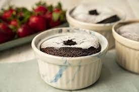

Sufle Tarifi
Evde hazırlaması çok pratik ve bir o kadar da lezzetli bir Sufle tarifi...
Yalnızca 5 malzeme kullanarak nefis bir tatlı yapın...

Sufle İçin Gerekli Malzemeler
- 3 tane yumurta
- 80 gr. bitter çikolata
- Yarım su bardağı un
- 50 gr. tereyağı
- Yarım su bardağı toz şeker
- 1 çimdik tuz
Sufle Tarifi Nasıl Yapılır?
- Çikolatalı sufle yapmaya başlamadan önce İlk olarak fırını 220 derecede çalıştırın.
- Tereyağını teflon tavada kısık ateşte erittikten sonra çikolatayı ekleyin ve karıştırarak eritin. Eridikten sonra ocağı kapatarak unu ilave edin ve iyice karıştırın.
- Ayrı bir kapta yumurta ve şekeri karışım beyazlayana kadar çırpın. Şeker tadının ön plana çıkması için tuzu ekleyip çırpın.
- Çikolatalı harcı ilave ederek mikserle tekrar çırpın. Hamurumuz hazır.
- Sufle kaplarınızı ya da ısıya dayanıklı küçük kaplarınız varsa içlerini yağlayarak hamurdan eşit şekilde hepsine paylaştırın. Ve fırına verin.
- Fırından aldıktan sonra bir kaç dakika ilk sıcaklığının geçmesini bekleyin sonra ister tabağa çevirip ister kaseden yiyebilirsiniz.
- Kabınızı yağlamışsanız yapışmayacaktır. Folyodan sufle kapları var onları da kullanabilirsiniz, onlarda da suflenin çok rahat çıktığını göreceksiniz. Şimdiden afiyet olsun...
Tarif : Nefis Yemek Tarifleri